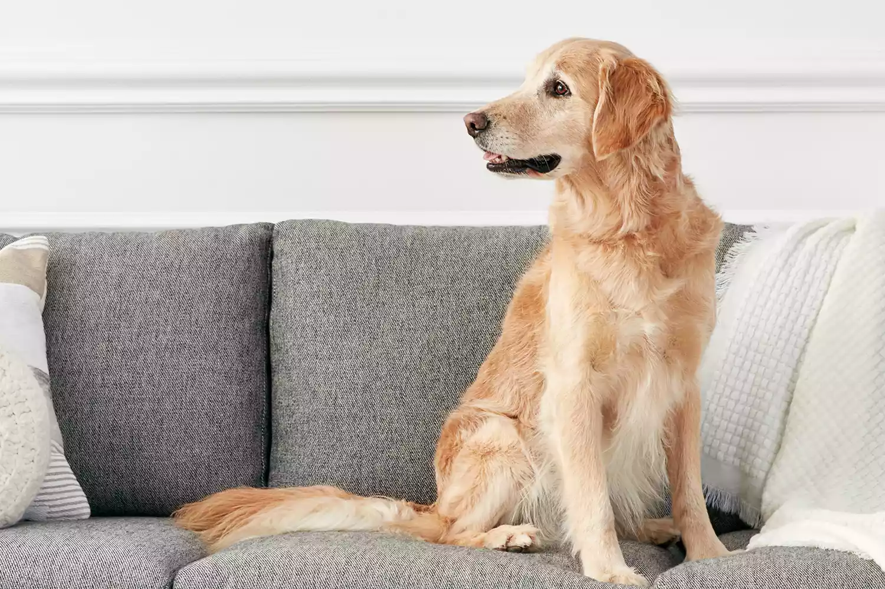
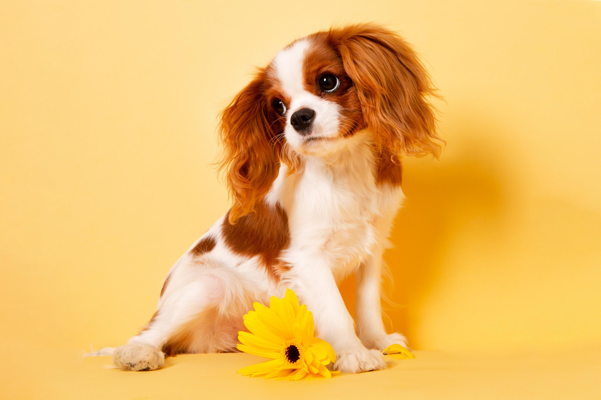
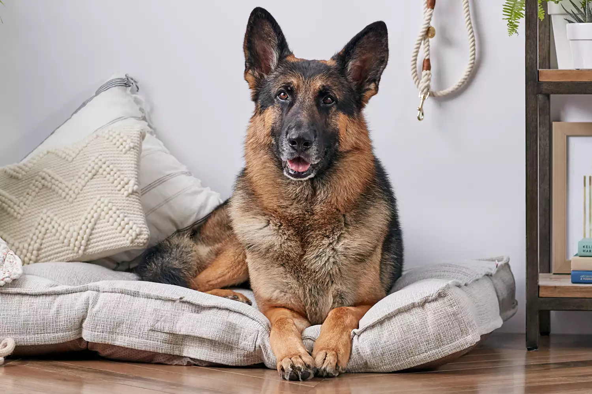

Emotional Support Animals

What are emotional support animals?
An emotional support animal is an animal companion that offers some type of benefit to an individual with some form of disability. The animal is intended to provide companionship and support that will help alleviate at least one aspect of the disability.
Dogs are the most common type of emotional support animal, but cats are quite common as well. Other types of animals, such as miniature horses, can also serve as ESAs.
For example, a peacock made headlines after it was denied from entering a United Airlines flight, despite the fact that its owner said that the animal was an emotional support animal. Some of the more unusual emotional support animals that have flown with their owners include a pig, a duck, a monkey, and a turkey. The vast majority of ESAs are not rare, exotic, or barnyard creatures.
What are service Dogs
Service animals are working animals that have been trained to perform tasks that assist disabled people. Service animals may also be referred to as assistance animals, assist animals, or helper animals depending on the country and the animal's function.
Dogs are the most common service animals, assisting people in many different ways since at least 1927.
Best Support Dogs
-
Golden Retriver
Golden retrievers have long reigned as one of the most popular dog breeds in the U.S., both as emotional support animals and general family pets. Their patient demeanors and overt friendliness make them a good fit for people with health issues. And as an added bonus, they are highly trainable.
-
Labrador Retriver

Search any list of the best emotional support, therapy, or service dogs, and you’ll likely see Labrador retrievers. Labs are gentle and friendly with a strong desire to please. They're good for people who need a companion out of their homes, as Labs tend to be comfortable exploring the world.
-
Cavalier King Charles Spaniel
The Cavalier King Charles spaniel is like a living stuffed animal. These dogs love to cuddle and typically have a friendly temperament. They're often referred to as the “comforter spaniel.” They're usually just as happy to cozy up with their favorite humans as they are to join them for a pleasant walk.
-
German Shepherd
German shepherds prefer to have a job, which is why they’re often chosen as working dogs. Their intelligence and eagerness to please also make them strong contenders as emotional support animals. Most German shepherds love to engage with their humans. And with sufficient training, they can become wonderful companions in public spaces.
-
Cats and other animals

If you are just not a dog person, you can make a cat into an emotional support animal. Cats can be loving and playful family members to their humans and even other animals. While they cannot be trained as a service animal, cats can become outstanding emotional support animals with housing and flying rights.